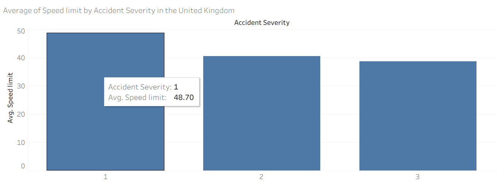
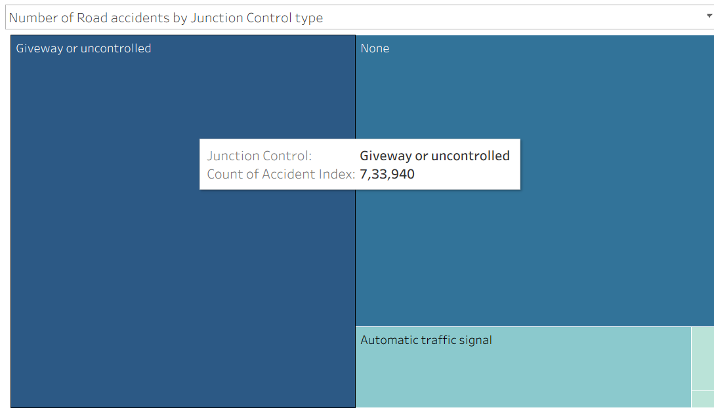
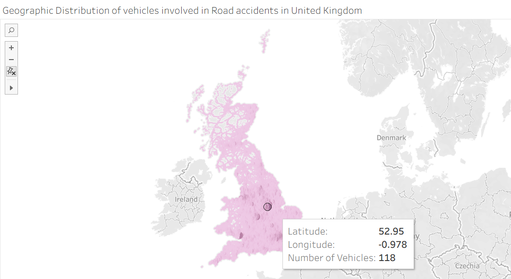
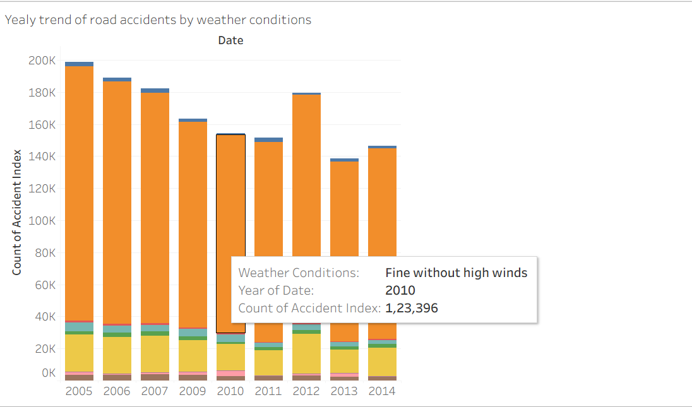
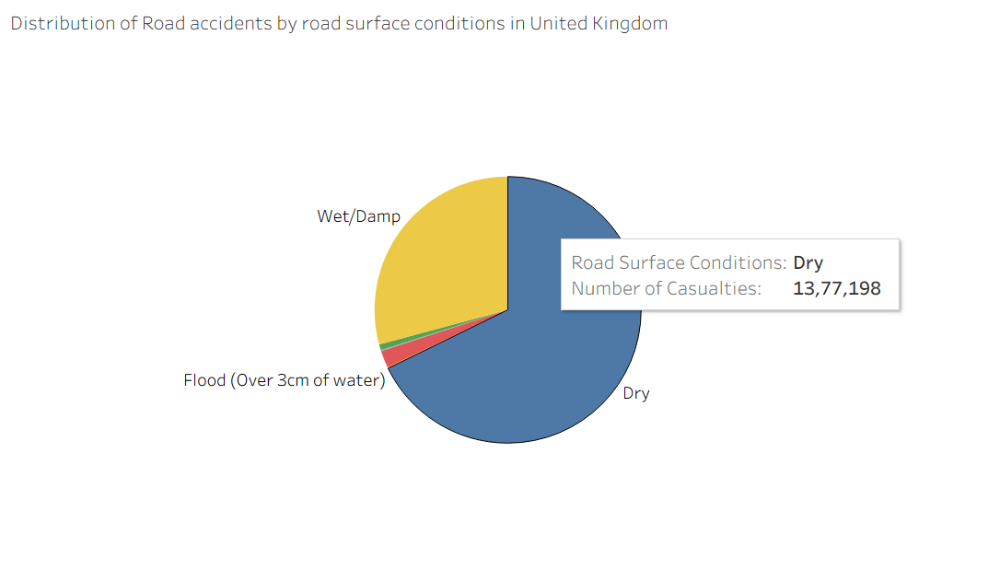
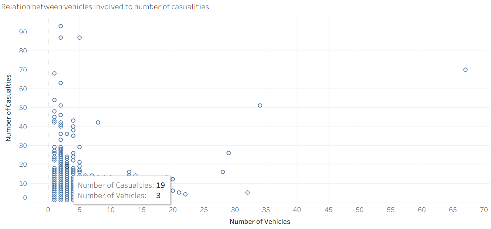

Exploring the data through 10 visualizations
Each chart below focuses on a specific question about road accidents in the UK. Together, they build a full picture of when, where and why accidents occur.
1. Accident Map – Number of Casualties
GeospatialThis map plots accidents using latitude and longitude. Dense clusters show accident hotspots with more casualties.

2. Average Speed Limit by Accident Severity
ComparisonThe bar chart compares average speed limits for accidents of different severity levels, highlighting that severe accidents tend to occur on faster roads.
3. Number of Accidents by Day of Week
TemporalThis view counts accidents for each day of the week to reveal which days are riskier for drivers.

4. Distribution of Accidents by Light Conditions
ConditionsThe bubble chart shows how many accidents happen in daylight, darkness and other light conditions.

5. Accidents by Junction Control Type
Road designThis treemap splits accidents by junction control (signals, give-way or uncontrolled), helping to spot junction types with higher accident counts.
6. Geographic Distribution of Vehicles Involved
GeospatialA second map focuses on how many vehicles are involved at each accident location, highlighting areas with frequent multi-vehicle crashes.
7. Yearly Trend of Accidents by Weather Conditions
TrendStacked bars show how accident counts change over the years and how they are divided across different weather conditions.
8. Distribution of Accidents by Road Surface Conditions
ConditionsThe pie chart shows the share of casualties on dry, wet, flooded and other road surfaces.
9. Scatter Plot – Vehicles vs Casualties
RelationshipEach point represents an accident and helps us see how the number of vehicles involved relates to the number of casualties.
10. Police Force by Weather Conditions
ImpactThis chart estimates how much police effort is associated with accidents in different weather conditions.